Counting vehicles in camera frames A pre-trained detector · the confidence cutoff · hand counts · Exercise 1
Classifying street views of Ithaca Labels made by looking · a pre-trained model given descriptions · a classifier we train · Exercise 2
Classifying expressions on a face A face detector · expression labels · what they measure
What can go wrong A count that is too low after dark · vehicles in view and vehicles entering · a camera that turned · photographs from one car
Today: the objects in a photograph become counts and labels, and each is judged against what a person sees in the same photograph. Left aside: following one object across video frames, outlines in place of boxes, images from above.
1 · Counting vehicles in camera frames
Three types of vision model
A vision model takes a photograph and returns an answer. All three types start from a model somebody already trained. They differ in who sets the question. Today uses all three.
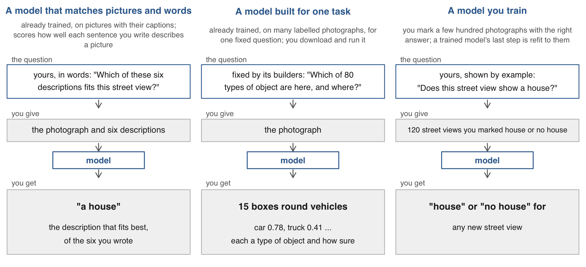
Training sets a model’s numbers from photographs with the right answers attached, their labels. Today: the first type for houses and for faces, the second for vehicles and for finding a face, the third for houses. A fourth type, a general model that is asked a question and writes an answer, appears today only as a second counter.
Vehicles at Manhattan’s toll crossings
How many vehicles are in view at the crossings into Manhattan’s congestion zone, hour by hour? The zone is Manhattan south of 60th Street, where vehicles pay a toll to enter.
The photographs: New York City publishes live traffic cameras. I saved a frame from each of 33 cameras at the zone’s crossings about every ten minutes for two days: 4,037 frames.
The model: a pre-trained detector, used as released. It finds every car, truck, bus and motorcycle in a frame. Nothing is trained.
The reference: on 30 frames I counted the vehicles by hand, one by one, from the enlarged frame.
Frames: New York City DOT traffic cameras, 352 by 240 pixels, 9 to 11 November 2026. The city keeps no archive of past frames. The toll began in January 2025.
The same camera at three times
The same camera on a bridge exit ramp at 62nd Street: empty at night, a queue at the morning rush, a queue with headlights in the evening. The count has to work on all three.
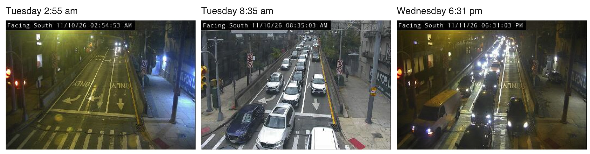
62nd Street at the Queensboro Bridge upper-level exit ramp. Tuesday 10 and Wednesday 11 November 2026.
The project folder
Download the zip from the session page, unzip it and open 22-photos-ii.Rproj, so every path on the slides works. The folder holds what each model returned for three sets of pictures: traffic-camera frames, street views of Ithaca, frames of Fed press conferences.
22-photos-ii/, as its README.md describes it
22-photos-ii/ data/cameras/ cameras.csv, the 33 cameras (the 4,037 frames are too large for the zip) data/ithaca/ the list of street panoramas of Ithaca, as Mapillary returned it data_clean/ boxes.csv and frames.csv: the detector's objects, one row each, and the frames searched handcount.csv: 30 frames counted by hand views.csv: the 1,630 street views cut from the panoramas hand_labels.csv: 200 views labelled by looking typed_labels.csv, view_embeddings.csv: what the pre-trained model returned for each view fed_expressions.csv, fed_hand_labels.csv: the Fed chair's face, frame by frame code/ 1_count.R, 2_houses.R, 3_faces.R in lecture order; run_everything.R runs all three 22-photos-ii.R the live script: every code slide in order tools/ what made data_clean/ from the pictures before class (Python)
Every script uses base R. Nobody needs Python, an account or the network: the models ran before class and their output is in data_clean/.
A detector’s boxes on one frame
An object detector takes one photograph and returns every object it finds: a box, a class (the type of object) and a confidence (how sure it is, from 0 to 1). This one found 15 vehicles in a frame from a New York City traffic camera.
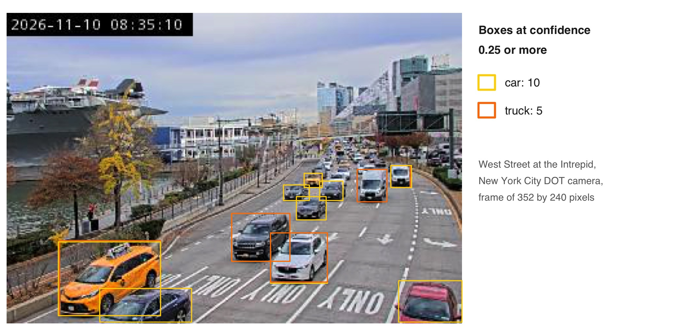
A pre-trained detector: its authors trained it on about 118,000 everyday photographs labelled with 80 classes. It ran on a laptop as released: nothing was trained for this course. Only boxes at confidence 0.25 or more are drawn. It calls two of these cars “truck”.
One row per detected object
I saved one frame per camera about every ten minutes: 4,037 frames. The detector’s answer is the table boxes. Each row is one object it found: the camera, the moment, the type of object, how sure it is, and the four corners of its box. It holds no counts; we compute those in R. frames lists the frames searched.
R Console, in the 22-photos-ii folder; base R; reads data_clean/boxes.csv and frames.csv
boxes <-read.csv("data_clean/boxes.csv", colClasses =c(cam ="character", stamp ="character"))frames <-read.csv("data_clean/frames.csv", colClasses =c(cam ="character", stamp ="character"))head(boxes[boxes$cam =="16"& boxes$stamp =="20261110_083455", ], 3) # three objects of the frame shown before
cam is the camera, 00 to 32. stamp is the moment the frame was saved, as year, month, day, hour, minute, second. label is the type of object and conf the confidence. x1, y1 is the box’s top-left corner and x2, y2 its bottom-right, in pixels from the frame’s top-left.
One camera over two days
West Street at the Intrepid, one frame about every ten minutes from Monday night to Wednesday evening. Each bar is one hour: the mean number of vehicles the detector found per frame. Grey is night, where the detector finds too few vehicles. Hatched hours have no frames.
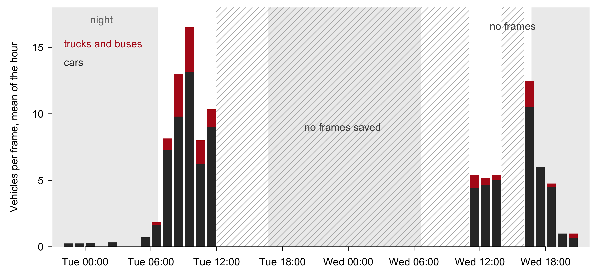
Boxes at confidence 0.25 or more. No frames were saved from Tuesday 11:25 am to Wednesday 11:14 am and on Wednesday from 1:49 to 4:32 pm: the laptop collecting them was closed. Wednesday, November 11 was a public holiday. The R that draws this is on the session page and in the live script.
Why the detector ran in Python
The vehicle detector ran in Python, on a laptop, before class: 4,037 camera frames in 169 seconds. Its output is boxes.csv. From that table on, everything today is R.
R can run a pre-trained detector too, through the torchvision package. We used Python for three reasons.
Speed. About 22 frames a second in Python against 3 in R.
Detections. On one frame, 19 vehicles in Python against 12 in R, at the same confidence.
Reliability. The R detector stopped with an error on 1 of 40 frames.
The Python script is tools/detect_frames.py; tools/requirements.txt lists its packages and the README gives the commands. Run again on the saved frames it returns the same table. Nobody needs to run it. The two detectors are different models, which is one reason their counts differ.
The count at three cutoffs
Every count so far kept the boxes at confidence 0.25 or more. That number is a cutoff, the lowest confidence we accept, and it is our choice. One frame of the FDR Drive at 64th Street, Tuesday 8:35 am, at three cutoffs.
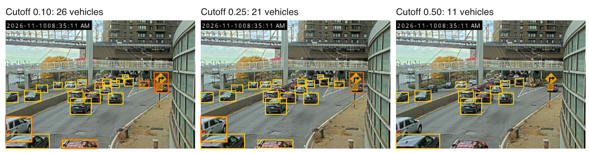
A low cutoff keeps doubtful boxes, some of them a second box on the same vehicle. A high cutoff drops small and partly hidden vehicles. Over all 4,037 frames the mean count is 6.2, 3.0 and 1.3 at the three cutoffs.
Hand counts on 30 frames
To choose a cutoff we need the true count on some frames. I counted the vehicles by hand on 30 frames: ten cameras, each on Tuesday at 2:55 am, Tuesday at 8:35 am and Wednesday at about 6:20 pm.
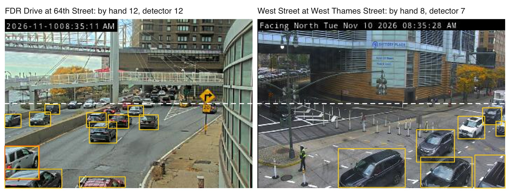
My rule: count every car, truck, bus and motorcycle that is entirely below the dashed line, parked ones included. That area is the zone. Beyond the line vehicles are a few pixels wide and cannot be told apart. The detector’s boxes are counted by the same rule.
The detector’s count depends on the confidence cutoff, and the detector does poorly in the dark. Thirty frames were counted by hand (hand$count): ten in daylight, ten after dark, ten at 2:55 am. Find the cutoff that comes closest to the hand counts in daylight, and see what any cutoff does after dark. 5 minutes.
cuts <- c(0.10, 0.15, 0.25, 0.35, 0.50).
The average miss at one cutoff, by moment: tapply(abs(in_zone(k) - hand$count), hand$moment, mean).
The same for every cutoff, with sapply() over cuts.
One line: the cutoff you would use in daylight, and what no cutoff fixes.
hand holds my 30 hand counts of vehicles. moment is day (8:35 am), evening (6:20 pm, after dark) or night (2:55 am). in_zone(k) is the detector’s count below the line at cutoff k. Both come from the live script, just above this exercise. Two answers to compare with the room: the best cutoff in daylight and its miss, and the smallest miss after dark.
R Console, in the 22-photos-ii folder; hand and in_zone() from the live script
In daylight (day) cutoffs 0.25 and 0.35 come within two vehicles of the hand count. After dark (evening) the best cutoff still misses by 3.7 where the hand count averages 7.3: no cutoff fixes the dark. At 2:55 am (night) the frames are nearly empty, so the miss is small whatever the cutoff.
My count against a model’s
A second counter: a general vision model, shown each of the 30 frames and asked to count the vehicles. It also counted vehicles that cross the line.
It and I give the same count on 12 of 30 frames, and differ by 1.6 vehicles on average.
The detector differs from my count by 2.2 on average. Two careful counters already differ by 1.6.
R Console, in the 22-photos-ii folder; hand with det, the detector's count at cutoff 0.25, from the live script
table(same_count = hand$count == hand$count_model) # count: mine, by hand; count_model: a vision model
#> same_count
#> FALSE TRUE
#> 18 12
mean(abs(hand$count - hand$count_model)) # the average difference between the two counters
#> [1] 1.566667
aggregate(cbind(by_hand = count, model = count_model, detector = det) ~ moment, data = hand,FUN =function(x) round(mean(x), 1))
#> moment by_hand model detector
#> 1 day 8.0 10.8 7.6
#> 2 evening 7.3 8.2 4.0
#> 3 night 1.8 1.6 0.7
In daylight the model counted 10.8 vehicles a frame where I counted 8.0. Most of that gap is the rule at the line: whether a vehicle that crosses it counts. A counting rule has to settle its boundary cases before anyone counts.
Vehicles per frame by hour
Vehicles per frame on Tuesday, averaged over the 33 cameras, at three confidence cutoffs. Sunrise was at 6:37 and the detector misses vehicles in the dark, so the jump at 6 am overstates the rise in traffic.
R Console, in the 22-photos-ii folder; frames with n10, n25, n50 from count_frames() in the live script
frames$day <-substr(frames$stamp, 1, 8); frames$hour <-as.integer(substr(frames$stamp, 10, 11)) # yyyymmdd_hhmmsstue <- frames[frames$day =="20261110"& frames$hour <=11, ]by_hour <-aggregate(cbind(n10, n25, n50) ~ hour, data = tue, FUN = mean)par(mar =c(4, 4.5, 0.5, 6))matplot(by_hour$hour, by_hour[, -1], type ="b", pch =16, lty =1, col =c("grey60", "black", "grey60"),xlab ="Hour of Tuesday, November 10", ylab ="Vehicles per frame", las =1)text(11.4, unlist(by_hour[12, -1]), c("cutoff 0.10", "0.25", "0.50"), pos =4, xpd =NA)
2 · Classifying street views of Ithaca
Which Ithaca views show a house
Along the streets of Ithaca, which stretches are lined with houses?
The photographs: 1,630 views of the side of the street, cut from a volunteer’s panoramas on Mapillary.
Two models:
A pre-trained model, used as released. It is given six descriptions in words and picks the one that fits the view. Nothing is trained.
A classifier we train on our own labels.
Why two: the first needs no labels. The second needs labels someone makes by looking. Comparing them says whether making labels is worth it.
The reference: 200 views I labelled by looking. The labels judge both models and train the second.
Photographs: Mapillary contributor quickness805, CC BY-SA 4.0, April 2024.
Mapillary’s street photographs of Ithaca
Mapillary is a crowdsourced alternative to Google Street View. Volunteers upload street photographs and anyone may download them. The quality is lower and uneven. Green lines are the streets of Ithaca that have photographs.
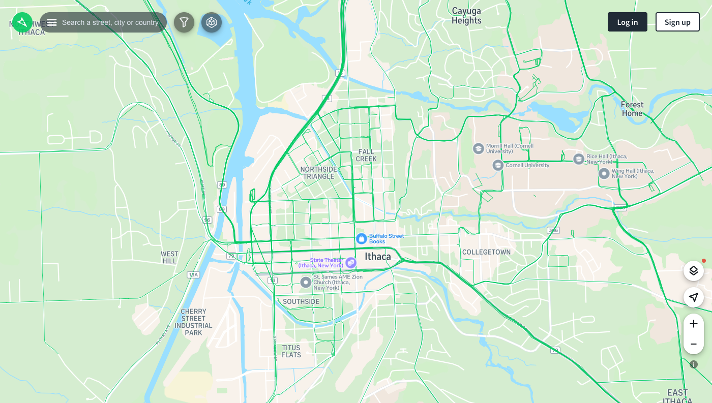
Screenshot of mapillary.com, 11 November 2026. The panoramas used here are one volunteer’s, from about 17 km of these streets in April 2024, one kept every 20 metres or more. Mapillary blurs faces and licence plates.
Cutting a panorama into two views
A panorama is the full circle around the car. Two ordinary photographs are cut from each, one to the left and one to the right. Each faces the buildings on its side of the street.
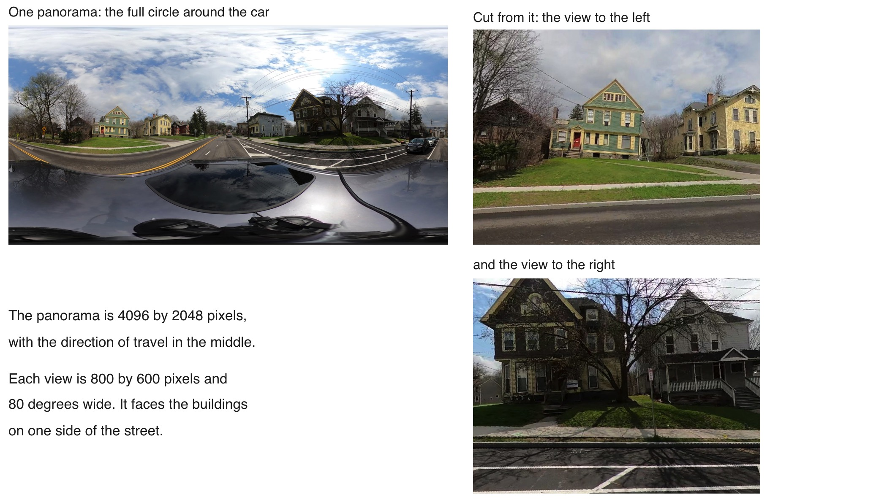
815 panoramas give 1,630 views. A view is a stretch of street and can hold two houses, half a house or none. Photographs: Mapillary contributor quickness805, CC BY-SA 4.0.
My labels on 200 views
I looked at a random 200 of the 1,630 street views of Ithaca and labelled each one: 41 show a house and 148 do not. I left 11 undecided. The labels judge the first model and train the second.
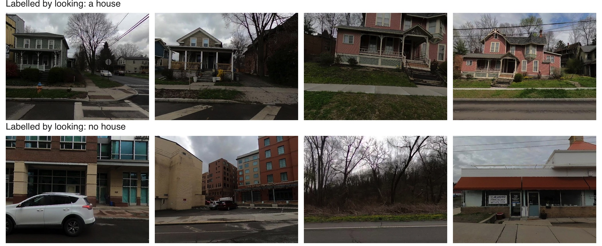
My rule: “house” when I can see a house, “no house” when I cannot, and no label when a house is barely visible or I am in real doubt.
Eleven views I left undecided
On 11 of the 200 views I gave no label: a house was barely visible, or I doubted that the building is a house.
These 11 are left out of the comparisons that follow.
Another person would decide some of them differently. A label is a judgment.
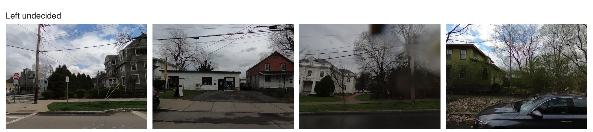
Four of the eleven. For comparison, a general vision model asked the same question gives my label on 178 of the 189 views I did label.
A pre-trained model given six descriptions
The first model is used as released. Its authors trained it on hundreds of millions of pictures with their captions, and we train nothing.
Its output: a share from 0 to 1 for each description we wrote. The shares sum to 1, and its answer is the description with the largest share.
What it cannot do: count (“how many people?”), say where an object is, or write an answer of its own. It only ranks the descriptions it is given.
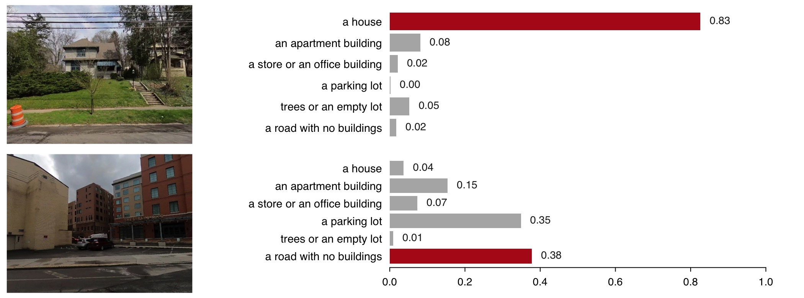
Two street views and the model’s six shares for each; its answer is in red. Six descriptions, so that trees, shops and car parks each have somewhere to go. The model is CLIP, released openly by OpenAI: 1,630 views in 26 seconds on a laptop.
Reading the model’s shares in R
typed_labels.csv holds the model’s shares: one row for each street view and each description. The model’s answer for a view is its row with the largest share.
R Console, in the 22-photos-ii folder; base R; reads data_clean/hand_labels.csv and typed_labels.csv
hand_labels <-read.csv("data_clean/hand_labels.csv") # 200 views: house 1 or 0 by looking, NA where undecidedhand_labels <- hand_labels[!is.na(hand_labels$house), ] # the 189 views with a labeltyped <-read.csv("data_clean/typed_labels.csv") # every view, every description, the model's shareshows <- typed[typed$set =="shows", ] # set "shows": the six descriptions of what a view showsshows[shows$view == hand_labels$view[hand_labels$n ==8], c("label", "share")] # one view: six shares that sum to 1
#> label share
#> 4597 a house 0.8260
#> 4598 an apartment building 0.0812
#> 4599 a store or an office building 0.0211
#> 4600 a parking lot 0.0020
#> 4601 trees or an empty lot 0.0522
#> 4602 a road with no buildings 0.0175
top <- shows[order(shows$view, -shows$share), ] # each view's descriptions, largest share firsttop <- top[!duplicated(top$view), c("view", "label", "share")] # keep the first: the model's answermean(top$label =="a house") # the share of all 1,630 views it calls a house
#> [1] 0.2343558
order() sorts each view’s rows by share and !duplicated() keeps the first row of each view. The model calls 23% of the 1,630 views a house.
The pre-trained model matches 169 of 189 labels
Of the 41 views I labelled “house”, the pre-trained model says “a house” for 33 and misses 8. Of the 148 I labelled “no house”, it wrongly says “a house” for 12. Its answer matches my label on 169 of 189 views: 89.4%.
R Console, in the 22-photos-ii folder; hand_labels and top from the slide before
h <-merge(hand_labels, top, by ="view") # the 189 labelled views, each with the model's answerh$pretrained <-as.integer(h$label =="a house") # 1 when the model's answer is "a house"table(by_looking =ifelse(h$house ==1, "house", "no house"),model =ifelse(h$pretrained ==1, "house", "no house"))
#> model
#> by_looking house no house
#> house 33 8
#> no house 12 136
mean(h$house == h$pretrained) # the share of views where model and label match
#> [1] 0.8941799
mean(h$house ==0) # the share that show no house
#> [1] 0.7830688
Nearly four views in five show no house. A model that answered “no house” every time would match 78% of my labels. The pre-trained model’s 89.4% is judged against that 78%.
Where the model and my labels disagree
The pre-trained model and my labels disagree on 20 of the 189 views. Top: four views it called a house and I did not. The first two are apartment buildings that look like large houses. Bottom: four houses I labelled that it gave another description, three of them behind a fence or trees.
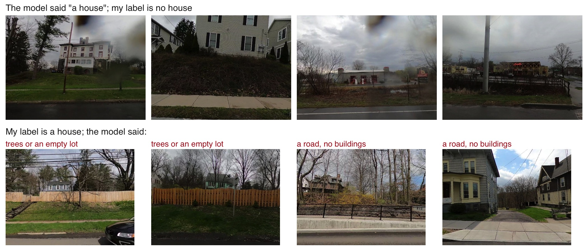
Top row: the four it was most sure of, among the 12 it called a house and I did not. Bottom row: four of the 8 houses it missed, with the description it chose.
A view as 512 numbers
The second model starts from these. Each grid is the real list of 512 numbers, the embedding, that a pre-trained model returns for the view above it.
No single number means “roof” or “porch”, and the grids look alike.
Similarity of two lists (1 is identical): the two houses 0.86, the first house and the hotel 0.75.
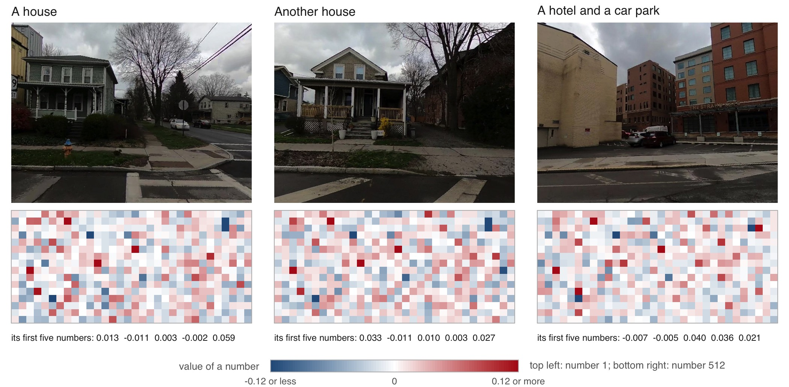
The numbers are read from data_clean/view_embeddings.csv, one row per view, and drawn in order in rows of 32. The model is the one that was given the six descriptions.
Five summaries of the 512 numbers
Each view’s 512 numbers are boiled down to five summaries, each a weighted sum of the 512. Five numbers are few enough to fit on about a hundred labelled views.
Left: my 189 labelled views on the first two summaries. Houses, in red, sit together.
Right: three houses and three other views, each with its five summaries as bars. The houses have a large negative first summary.
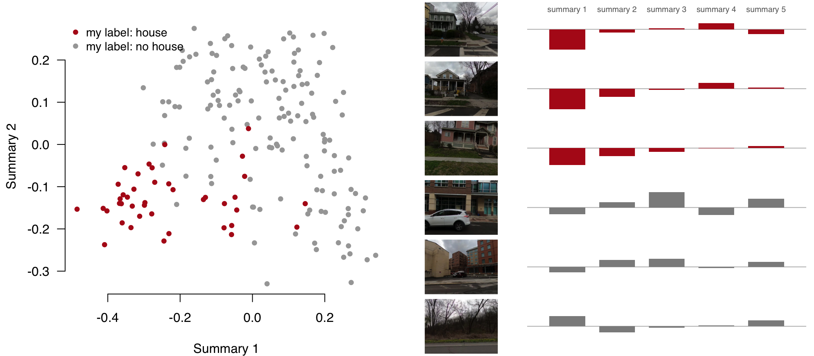
The summaries are principal components: the weighted sums that keep most of the variation in the 512 numbers. A logistic regression turns the five into a probability of “house”.
Fitting views and held-out views
The regression learns from 120 of my labelled views, picked at random.
The other 69 are held out. The classifier never sees them, and it is judged on them.
A classifier judged on the views it learned from looks better than it is.
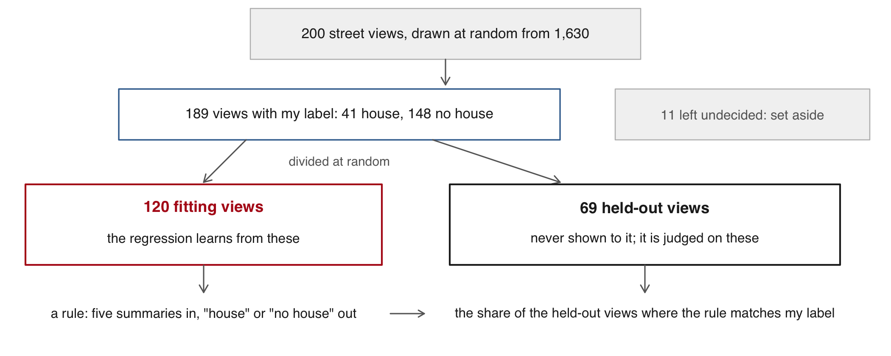
This is one division into two groups. Cross-validation repeats the division several times and averages the results.
Training a classifier on my labels
prcomp() makes the five summaries of each view’s 512 numbers, from the fitting views only.
glm(..., family = binomial) is the logistic regression: it returns a probability of “house” for each view.
A held-out view with a probability above 0.5 is called a house.
R Console, in the 22-photos-ii folder; hand_labels from the slides before; reads data_clean/view_embeddings.csv
emb <-read.csv("data_clean/view_embeddings.csv") # one row per view: view, e1 to e512X <-as.matrix(emb[, -1]); rownames(X) <- emb$viewset.seed(6850)fit <-sample(nrow(hand_labels), 120) # 120 labelled views to fit on; the other 69 held outpc <-prcomp(X[hand_labels$view[fit], ]) # principal components, from the fitting views onlyZ <-as.data.frame(predict(pc, X[hand_labels$view, ])[, 1:5]); Z$house <- hand_labels$housem <-glm(house ~ ., data = Z[fit, ], family = binomial) # logistic regression on 5 componentsp <-predict(m, newdata = Z[-fit, ], type ="response") # a probability for each held-out viewtable(by_looking =ifelse(Z$house[-fit] ==1, "house", "no house"), trained =ifelse(p >0.5, "house", "no house"))
#> trained
#> by_looking house no house
#> house 14 2
#> no house 3 50
Rows: my label. Columns: the trained classifier. It matches my label on 64 of the 69 held-out views.
Agreement on 69 held-out views
On the 69 held-out street views the trained classifier agrees with my label on 92.8%. The pre-trained model, which needed no labels, agrees on 82.6%, and “no house” every time on 76.8%. My 120 labels added ten percentage points.
R Console, in the 22-photos-ii folder; h, hand_labels, fit, p and Z from the slides before
held <- hand_labels$view[-fit] # the 69 views kept out of the fittinground(c(trained =mean((p >0.5) == Z$house[-fit]),pretrained =mean(h$pretrained[match(held, h$view)] == hand_labels$house[-fit]),never =mean(hand_labels$house[-fit] ==0)), 3)
#> trained pretrained never
#> 0.928 0.826 0.768
The comparison is fair only on views the trained classifier never saw. Sixty-nine views is a small test: one view is 1.4 points, so 92.8 against 82.6 is seven views.
The classifier that says whether a street view shows a house was trained on 120 labelled views. Labels cost time. Train it on 20, 40, 80 and 120 of those views and judge each on the same 69 held-out views. 5 minutes.
Copy agree() from the live script, 22-photos-ii.R on the session page: it trains on n of the 120 fitting views and returns the share of the 69 held-out views it gets right.
Run it for each size with 20 different draws of the labels, and take the mean: sapply() inside sapply().
One line: where the gain from more labels flattens, and how that compares with the pre-trained model’s 82.6%.
X, hand_labels and fit from the slides before, or run code/2_houses.R sections 1 to 3 first. Two answers to compare with the room: the agreement with 20 labels, and the gain from the last 40.
R Console, in the 22-photos-ii folder; X, hand_labels and fit from the slides before
agree <-function(n, seed) {set.seed(seed); use <-sample(fit, n) pc <-prcomp(X[hand_labels$view[use], ]) Z <-as.data.frame(predict(pc, X[hand_labels$view, ])[, 1:5]); Z$house <- hand_labels$house m <-suppressWarnings(glm(house ~ ., data = Z[use, ], family = binomial))mean((predict(m, newdata = Z[-fit, ], type ="response") >0.5) == Z$house[-fit])}sizes <-c(20, 40, 80, 120)round(sapply(sizes, function(n) mean(sapply(1:20, function(s) agree(n, s)))), 3)#> [1] 0.858 0.880 0.914 0.928
With 20 labels the trained classifier already agrees on 85.8%, above the pre-trained model’s 82.6% with none. From 80 to 120 labels the gain is 1.4 points, one view. Here the first few dozen labels do most of the work.
Where the classifier finds houses
The classifier trained on my labels now labels all 1,630 views. Each dot is one view: red where it finds a house, 22% of them.
Red runs along the residential streets north and east of downtown. The lake shore, the highway and the campus are grey.
What expression does the chair of the Federal Reserve show while he speaks at a press conference? Markets watch him for signs of what the Fed will do.
The photographs: the Fed’s own video of the 24 press conferences from January 2021 to December 2023. One frame was kept every 30 seconds: 2,486 frames.
The models: a pre-trained face detector finds his face. The pre-trained model used for the houses is given four descriptions (happy, neutral, angry, worried) and picks one. Nothing is trained.
The reference: 80 of the faces, labelled one by one by a general vision model. A person has not checked them.
Video: Board of Governors of the Federal Reserve System, 480 by 270 pixels. Curti & Kazinnik (JME, 2023) measured the chair’s expressions at these press conferences and studied how markets moved with them.
From a frame to an expression
Which frames show the speaker. The pre-trained model used for the houses picks among four descriptions of a frame: 1,316 of 2,486 frames.
Where the face is. A pre-trained face detector finds a face in 1,181 of them.
Which expression. The first model again. We wrote four descriptions in plain English and it must pick one: “a happy, smiling face”, “a neutral face”, “an angry face”, “a worried or sad face”.
Time. 49 seconds on a laptop for all three steps. Nothing was trained.
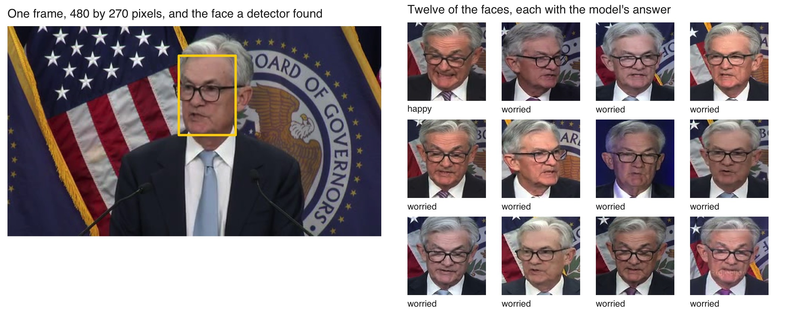
Under each face: the description the model picked. The first model is CLIP, released openly by OpenAI; the face detector is YuNet, from the OpenCV project.
The model calls most faces worried
The pre-trained model calls 98% of the Fed chair’s 1,181 faces worried. To judge that, a general vision model labelled 80 of the faces one by one: 75 neutral, 1 happy and 4 it could not judge (“unclear”). The two agree on 1 face in 80.
R Console, in the 22-photos-ii folder; base R; reads data_clean/fed_expressions.csv and fed_hand_labels.csv
ex <-read.csv("data_clean/fed_expressions.csv") # one row per face: a share for each of four descriptionsround(prop.table(table(ex$top)), 3) # the label with the largest share, all 1,181 faces
mean(f$label == f$top) # the share of faces where the two agree
#> [1] 0.0125
A serious face of a man speaking sits closer to the description “a worried or sad face” than to “a neutral face”. The classifier cannot know that this is how he looks at rest. No person has checked the 80 labels.
The answer depends on the descriptions
The model has no list of answers of its own. We write the descriptions, and it must pick one of them.
Offer a fifth description, “a serious, focused face”, and 79% of the same faces move to it. “Worried” falls from 98% to 21%.
“98% worried” says as much about our four descriptions as about his face.
R Console, in the 22-photos-ii folder; base R; reads data_clean/fed_expressions_sets.csv
sets <-read.csv("data_clean/fed_expressions_sets.csv") # the same 1,181 faces, three sets of descriptionssets[, c("set", "description", "share")] # share: the faces given that description
#> set description share
#> 1 four, as on the slides a happy, smiling face 0.009
#> 2 four, as on the slides a neutral face 0.008
#> 3 four, as on the slides an angry face 0.002
#> 4 four, as on the slides a worried or sad face 0.981
#> 5 five, adding serious a happy, smiling face 0.006
#> 6 five, adding serious a neutral face 0.001
#> 7 five, adding serious an angry face 0.000
#> 8 five, adding serious a worried or sad face 0.207
#> 9 five, adding serious a serious, focused face 0.786
#> 10 two, smiling or not a smiling face 0.003
#> 11 two, smiling or not a face that is not smiling 0.997
What an expression label measures
An expression label describes the face in one frame. Whether it tells what the person feels is disputed.
A use in economics.Hu & Ma (JF, 2025) scored faces, voices and words in startup pitches. More positive pitches were funded more often, and those startups later did worse.
Privacy. A face identifies a person. The Fed chair is a public official speaking in public. A study of private people’s faces needs approval from the university’s ethics board, and usually their consent.
4 · What can go wrong
Detector does poorly in the dark
Two New York cameras, each in daylight and after dark. Boxes are the detector’s at confidence 0.25 or more, entirely below the dashed line that marks the counting zone. “By hand” is my count. After dark a vehicle is two lights in glare.
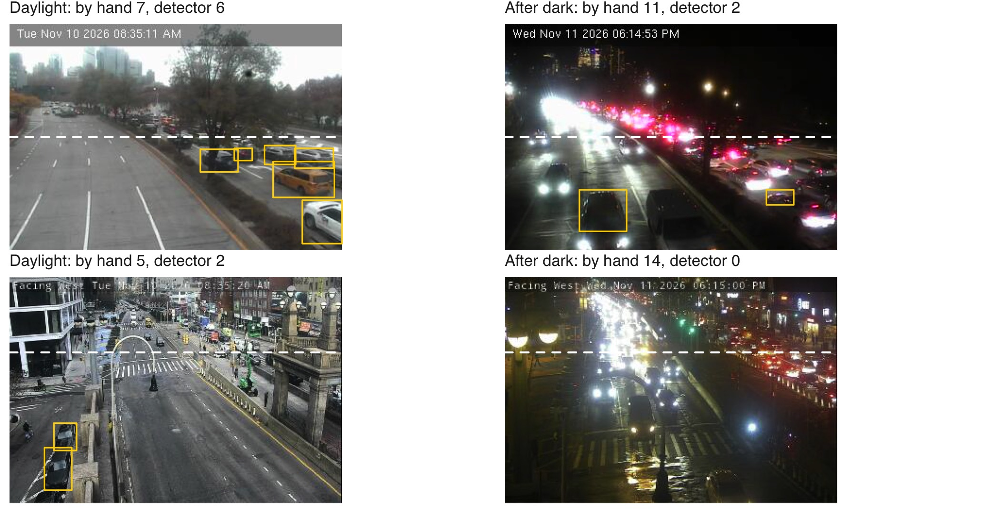
Top: Twelfth Avenue at 57th Street. Bottom: the Williamsburg Bridge roadway at Delancey Street. The detector was trained mostly on daylight photographs of whole vehicles.
The count is too low after dark
In daylight the detector finds 7.6 vehicles a frame where I count 8.0. After dark it finds 4.0 where I count 7.3.
This error is a bias that depends on the light. It does not average out over many frames.
Every comparison across hours carries it: the evening rush looks like a lull. So does a comparison across seasons, since 5 pm is dark in December and light in June.
To account for it: compare daylight hours only, or correct the dark hours with hand counts made in the dark, and report the error by light.
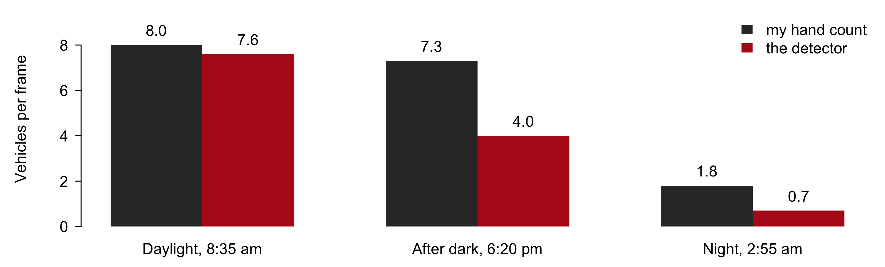
Vehicles in view, vehicles entering
A camera frame shows the vehicles in view at one instant. New York’s toll authority counts vehicles entering Manhattan’s congestion zone in each ten minutes. In a jam the first rises while the second falls, so more vehicles in a frame can mean fewer getting through.
What the photograph measures: how full the road is.
What the record measures: how many vehicles passed.
Counting vehicles that pass needs the same vehicle followed from one frame to the next, and frames a fraction of a second apart. The city’s cameras refresh about every five seconds.
The record: the Metropolitan Transportation Authority’s Congestion Relief Zone vehicle entries, in ten-minute blocks by entry point and type of vehicle.
A camera that turned
A fixed camera is fixed until someone turns it. This one pointed north on Tuesday morning and east on Wednesday evening. Its counts before and after describe two different roads.
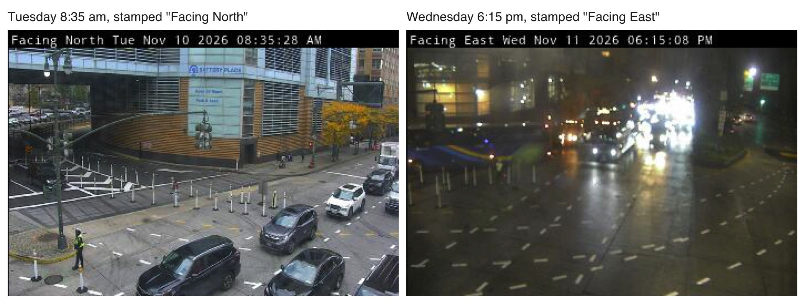
West Street at West Thames Street, by the Battery Tunnel. The direction is in the stamp the camera prints on each frame, which a script can read before comparing counts across days.
All views from one car
Every street view of Ithaca comes from one volunteer’s car on two days of April 2024. The share of views with a house describes the streets that car drove, and only those. The second day was wet, and drops on the lens hide part of many views.
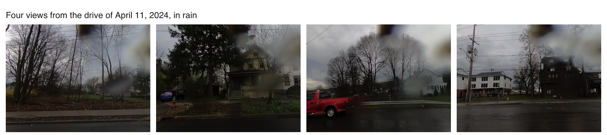
A street the car skipped is missing, and so is every house built or torn down since. Mapillary, the open street-photo site, has other years for Ithaca from other volunteers, with other cameras and other streets.
Practice
Six tasks on the session page run in the 22-photos-ii folder, on the camera frames’ box table, the 30 hand counts and the 189 labelled views, with solutions behind a click. None needs Python or the network.
1–2 The box table: classes by hour · the busiest camera
3–4 The hand counts: the detector’s miss where the two counters agree · the cutoff at which too-high and too-low counts cancel
5–6 The house labels: the classifier with 10 components · views it is least sure of